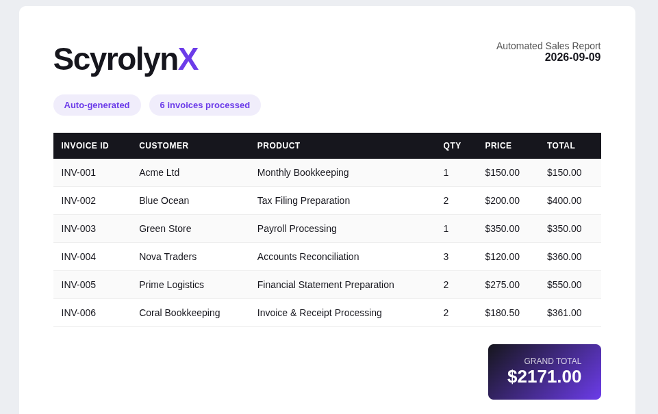

PROCESSING
✓ Validated · ✓ Processed · ✓ Report generated
AUTOMATION
Invoice Automation
A Python automation system designed to process invoice information, calculate totals and produce structured business output with validation and error handling.